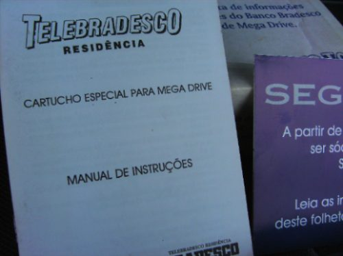

Telebradesco
 Nos
primórdios da internet brasileira, quando os micros eram coisa
de luxo, e acesso à web era literalmente coisa de outro mundo, o
banco Bradesco em parceria com a Tec Toy fizeram uma grande
inovação.
Nos
primórdios da internet brasileira, quando os micros eram coisa
de luxo, e acesso à web era literalmente coisa de outro mundo, o
banco Bradesco em parceria com a Tec Toy fizeram uma grande
inovação.
A proposta era simples: que tal acessar a sua conta do banco, com todo o conforto e comodidade de sua casa? Para isso, o pai de familia iria precisar do Telebradesco, um cartucho especial fabricado com exclusividade pela Tec Toy para o Bradesco; e tambem iria precisar pegar emprestado o Mega Drive do muleque para acessar o banco. Brigas de familia à parte (pai! Sai daí, o video game é meu, foi minha mãe quem compr.... SPLAT! *cintada* cala boca sua peste! ), o Telebradesco fazia o que prometia, permitia acesso on-line e instantaneo à conta do correntista, permitia tambem diversas operações como transferências e alguns pagamentos. Ajudava ainda mais na hora de consultar o saldo e extrato da conta no inicio e fim de mês, quando o bolo é mais lembrado...
!!! AVISO !!!
O
texto abaixo contem informações conscernentes à
vida no século passado. Se você só virou gente
depois de 2001, consulte lá embaixo no rodapé, o
glossário para entender as palavras e termos sublinhados.
O cartucho em si, era constituído por um modem de 14400 kbps e um programa de conexão que discava unica e diretamente para os servidores do Bradesco, portanto, o Telebradesco não podia ser usado para acessar o Altavista ou as páginas do Geocities. Para conseguir um aparelhinho desses, os requisitos eram:
1 - Ter conta corrente no Bradesco (tá, meio 'duh' de tão óbvio, mas tem gente que não percebe isso).
2 - Ter dinheiro para comprar esse serviço do banco, que não era dos mais baratos, mas tambem não era completamente incompravel.
3 - Ter moral suficiente em casa para usar o Mega Drive do moleque. Para ajudar nessa parte, vinha junto no pacote do Telebradesco um cinto de couro e uma réplica de borracha duma vara de Marmelo retrátil e portatil.
O modem funciona normalmente em qualquer Mega Drive fabricado em qualquer canto do mundo. Funciona até no Megavision pra você ter uma idéia. Algumas fotos do aparelho seguem abaixo:
| Mosaíco mostrando o Telebradesco em um anuncio no Mercado Livre |
| O manual, um folhetinho do Sega Club e o Telbradesco era o que vinnha na caixa |
Close da estrela. Lindo não? |
|  | |
| Manual do aparelho. Se alguem tiver um scan dele aí me avise!!! |
Ao abrir... tcharam! Aqui está o motivo do prejuízo das proximas contas de telefone da sua casa. |
|
|
|
| Raras imagens dos circuitos do Telebradesco. O chip quadrado e aquele dispositivo meio amarelo lá em cima, eram do modem, enquanto que os dois com etiquetas eram as roms do cartucho. Cortesia do Milles, que scaneou a plaquinha do cartucho. |
|
Glossário
Modem de 14400 kbs:
em 1995, para acessar a internet, os computadores utilizavam um
dispositivo chamado de MODEM. Esse troço era o
responsável por enviar, receber e traduzir sinais
telefônicos em dados digitais reconheciveis pelo computador.
Portanto, para usar um desses, é preciso uma linha telefonica
que será usada pelo Modem que irá literalmente ligar para
um servidor, que em seguida fara a conexão deste à
internet. A velocidade da conexão era limitada à
capacidade do modem em enviar e receber dados, que no caso do
Telebradesco, era de singelos 14400 Kilo BITS por segunto (veja bem,
é BITS e não BYTES!). Isso não era algo exatamente
veloz, mas dava pra acompanhar perfeitamente o prejuízo da conta
telefonica no extrato do banco ,
tudo provocado graças ao modem, que fica pendurado na linha
até o papai desligar o Mega Drive (ou o filho revoltado desligar a
luz da casa toda).
,
tudo provocado graças ao modem, que fica pendurado na linha
até o papai desligar o Mega Drive (ou o filho revoltado desligar a
luz da casa toda).
Discava: como explicado acima, o modem disca um número na linha de telefone, que era atendido por um servidor do Bradesco, que fazia a conexão do Mega Drive aos dados do correntista do banco.
Altavista: o Google do século passado, o achador de coisas da internet, os óio de quem não via! Fazia a mesma coisa que o Google hoje em dia, pesquisa rapidinho pra você qualquer coisa que deseja. O Altavista ainda tá vivo, meio pobre e capenga, mas tá vivo.
Geocities: no passado, as pessoas podiam criar SITES com muita facilidade com o uso do Geocities. Era simples, de gratis, e todo mundo gostava. O Geocities foi assassinado e sepultado dia desses, sumplantado pelos milhões de blogs espalhados por aí.
Cinto de couro e vara de Marmelo:
até o século passado, os pais, avós, tios e
padrastos utilizavam-se desses instrumentos para impor sua vontade
às pobres e coitadas crianças. Era de uso simples e
prático. Você podia pegar o cinto, sentar
espriguiçosamente no sofá da casa do seu irmão,
mandar o filho dele pegar umas 10 latas de cerveja pra você, e se
o muleque se recusasse podia dá uma chilapada nas pernas dele,
que com certeza ele iria obedecer .
O uso, na prática, era semelhante ao adotado ainda por algun
carroceiros que de vez em quando vemos nas cidades, dando chicotadas
nos pobres e coitados pangarés de rua... Ah! A vara de Marmelo
era a versão rigida do cinto, e doía pra cacete
.
O uso, na prática, era semelhante ao adotado ainda por algun
carroceiros que de vez em quando vemos nas cidades, dando chicotadas
nos pobres e coitados pangarés de rua... Ah! A vara de Marmelo
era a versão rigida do cinto, e doía pra cacete .
.
Megavision: se o Dinavision era o Nintendinho de gente mais ou menos (o NES de gente pobre era o Turbo Game )
o Megavision era o Mega Drive dessa gente. Clone genérico de
respeito do 16 bits da Sega, funcionava que era uma beleza. Aceitava
qualquer coisa na entrada de cartucho, rodava até pedra que
estivesse pintada de Sonic, inclusive jogos de qualquer parte do mundo,
incluindo aí os games japoneses que vinham em cartuchos
arredondados e incompativeis com os Mega Drives nacionais.
)
o Megavision era o Mega Drive dessa gente. Clone genérico de
respeito do 16 bits da Sega, funcionava que era uma beleza. Aceitava
qualquer coisa na entrada de cartucho, rodava até pedra que
estivesse pintada de Sonic, inclusive jogos de qualquer parte do mundo,
incluindo aí os games japoneses que vinham em cartuchos
arredondados e incompativeis com os Mega Drives nacionais.
Acesse o Trombone e comente sobre essa matéria!


construindo - construindo -construindo - construindo -construindo - construindo -construindo - construindo -construindo - construindo